介绍
k8s环境的安全主要来自3个方向：
1， images 镜像的安全问题
容器是基于镜像构建的，如果镜像本身就是一个恶意镜像或是一个存在漏洞的镜像，那么基于它搭建的容器自然就是不安全的了，故镜像安全直接决定了容器安全。
2, k8s 的配置和使用问题
Kubernetes 的服务在正常启动后会开启两个端口：8080，6443。两个端口都是提供 Api Server 服务的，一个可以直接通过 Web 访问，另一个可以通过 kubectl 客户端进行调用。如果没有合理的配置验证和权限，那么攻击者就可以通过这两个接口去获取容器的权限，甚至通过创建自定义的容器去获取宿主机的权限。etcd是一个高可用的key-value数据库，它为k8s集群提供底层数据存储。一旦etcd被黑客拿下，就意味着整个k8s集群失陷。etcd最大的安全风险是未授权访问。
3， k8s 自身组件和操作系统及其依赖组件的安全问题
比如， docker-runc CVE-2019-5736 和 containerd-shim CVE-2020-15257容器逃逸
Vmware Harbor是一个用于存储和分发Docker镜像的企业级Registry服务器，通过添加一些企业必需的功能特性，例如安全、标识和管理等，扩展了开源Docker Distribution。作为一个企业级私有Registry服务器，Harbor提供了更好的性能和安全。提升用户使用Registry构建和运行环境传输镜像的效率。Harbor支持安装在多个Registry节点的镜像资源复制，镜像全部保存在私有Registry中， 确保数据和知识产权在公司内部网络中管控。另外，Harbor也提供了高级的安全特性，诸如用户管理，访问控制和活动审计等。
在 Harbor 中，集成了开源项目 Trivy(老版本是Clair)的扫描功能，可从公开的 CVE 字典库下载漏洞资料。CVE 是 Common Vulnerabilities and Exposures 的缩写，由一些机构自愿参与维护的软件安全漏洞标识，记录已知的漏洞标准描述及相关信息，公众可以免费获取和使用这些信息。全球共有77个机构参与维护不同软件的 CVE 库，例如：VMware 维护着 VMware 产品的 CVE 库，红帽维护着Linux 上的 CVE 等等。
下面演示一下 Vmware Harbo + trivy 的安装：
# cd /etc/yum.repos.d/
# wget http://mirrors.aliyun.com/docker-ce/linux/centos/docker-ce.repo
# yum makecache
# yum install docker-ce -y && systemctl start docker && systemctl enable docker
# vim /etc/docker/daemon.json
{
"exec-opts": ["native.cgroupdriver=systemd"],
"registry-mirrors": ["https://docker.mirrors.ustc.edu.cn"]
}
# systemctl restart docker
# curl -L "https://github.com/docker/compose/releases/download/1.23.2/docker-compose-$(uname -s)-$(uname -m)" -o /usr/local/bin/docker-compose
# chmod +x /usr/local/bin/docker-compose
# wget https://github.com/goharbor/harbor/releases/download/v2.2.3/harbor-offline-installer-v2.2.3.tgz
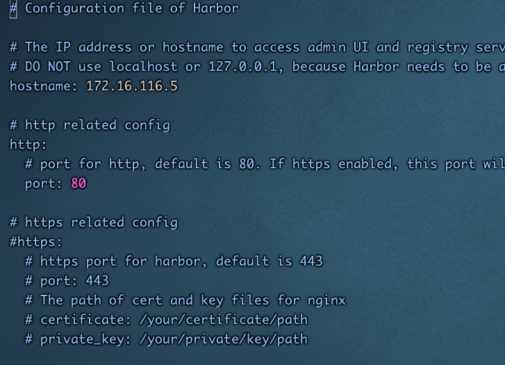
修改 harbor.yml配置文件，生存环境请用https，这里仅用于测试
# tar xf harbor-offline-installer-v2.2.3.tgz
# cp harbor.yml.tmpl harbor.yml
# ./prepare
# ./install.sh --with-trivy --with-chartmuseum
安装过程如图：
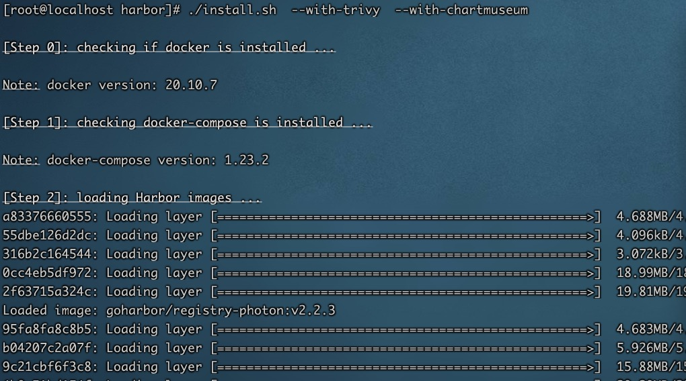
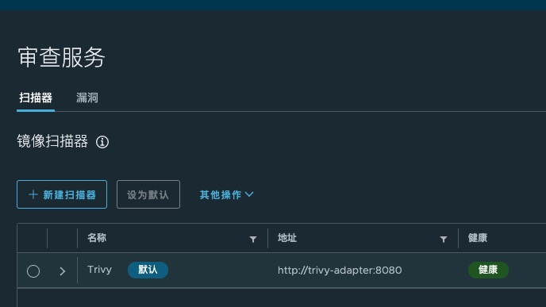
然后，我们把images 推到上面去：
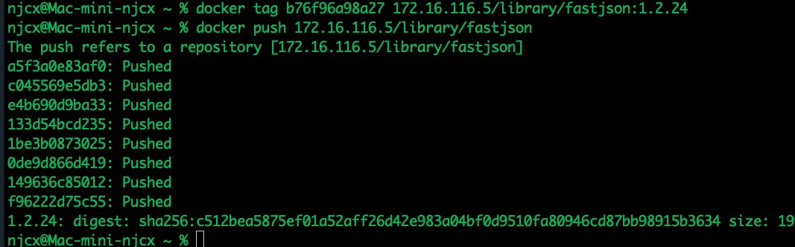
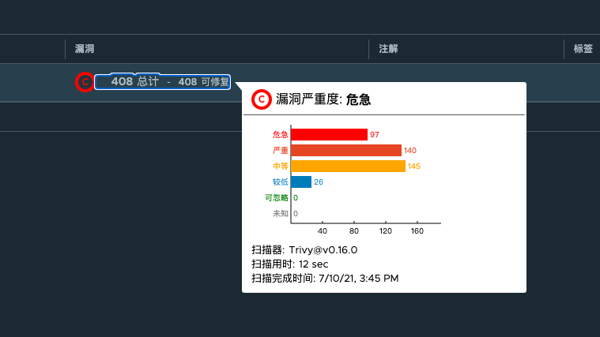
Vmware Harbor 提供了一个API 接口，这样我们就可以与SOC 集成，查看images 的安全情况。
/projects/{project_name}/repositories/{repository_name}/artifacts/{reference}/additions/vulnerabilities
curl -X GET "http://172.16.116.5/api/v2.0/projects/library/repositories/fastjson/artifacts/1.2.24/additions/vulnerabilities" -H "accept: application/json" -H "X-Request-Id: 111"
结果如下图：
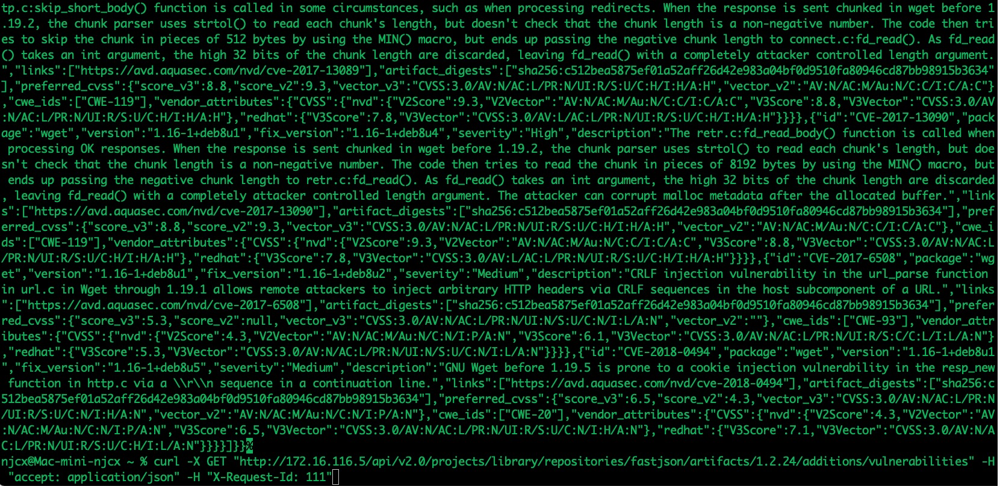
k8s 基线
互联网安全中心（CIS）是一个非营利性组织，其制定自己的配置策略基准（即CIS基准），使组织可以改善其安全性和合规性计划及态势。 除了针对操作系统、数据库等，该组织也推出了适用Kubernetes、dockers的Benchmark基准。 kubernetes CIS基准下载地址，如下
https://www.cisecurity.org/benchmark/kubernetes/
文件内容一共几大块
master节点的服务: apiserver，controller manager，scheduler，etcd
node节点的服务: kubelet, proxy
安全控制: RBAC, pod policy, network policy
该工具是使用Go语言完成，而测试文件则兼容于YAML格式，其测试结果也能支持JSON格式，方便使用者整合其他的自动化工具。在执行完测试任务后，系统除了告诉开发者Kubernetes未通过哪些测试外，也会给予如何改善的建议，例如移除K8s上某个不安全的配置设置建议，或者限制配置文件的权限等。下载地址如下
https://github.com/aquasecurity/kube-bench
$ kubectl apply -f job.yaml
job.batch/kube-bench created
$ kubectl get pods
NAME READY STATUS RESTARTS AGE
kube-bench-j76s9 0/1 ContainerCreating 0 3s
# Wait for a few seconds for the job to complete
$ kubectl get pods
NAME READY STATUS RESTARTS AGE
kube-bench-j76s9 0/1 Completed 0 11s
# The results are held in the pod's logs
kubectl logs kube-bench-j76s9
[INFO] 1 Master Node Security Configuration
[INFO] 1.1 API Server
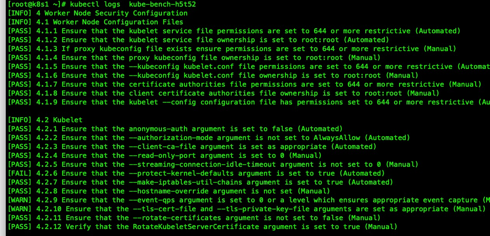
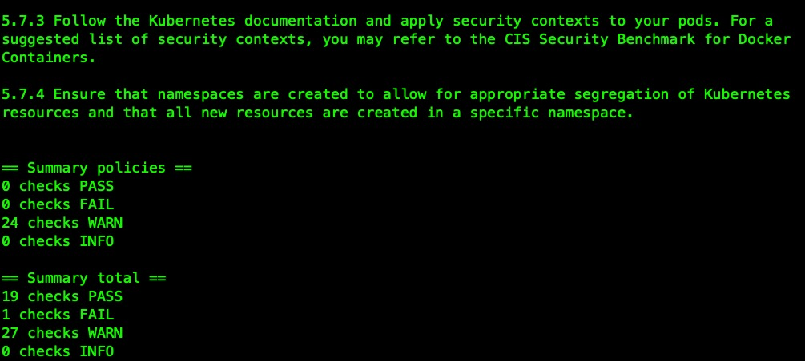
kube-hunter是也aquasec的开源工具，它们可以在Kubernetes集群中寻找安全问题。kube-bench主要用于让你的实践符合CIS的标准，而kube-hunter则关注你要暴露的漏洞。它们两个结合使用，可以为我们提供一个很好的发现安全问题的视角。kube-hunter 可以你的环境内部或外部运行扫描，
pip3 install kube-hunter //py3 环境
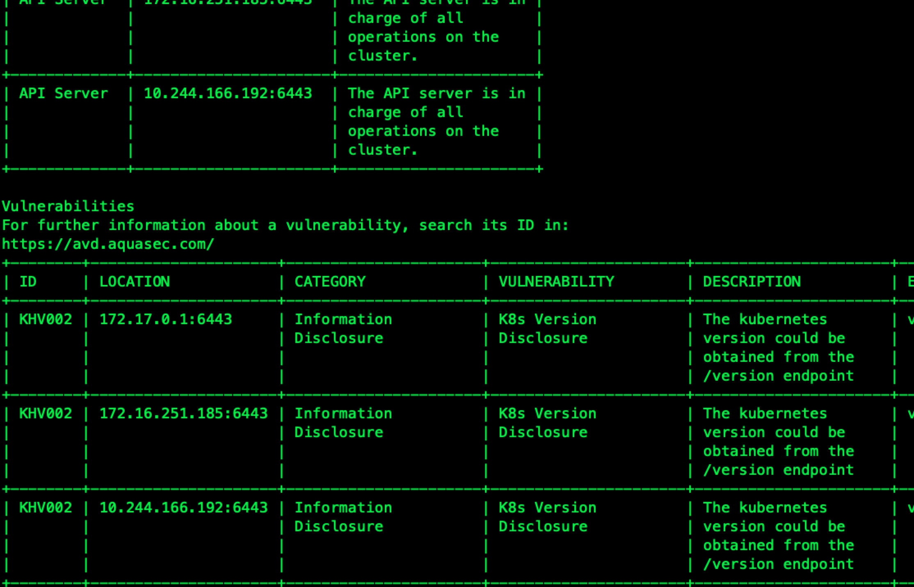
k8s runtime 的监控
Falco 由 Sysdig 于 2016 年创建，是第一个作为孵化级项目加入 CNCF 的运行时安全项目。Falco可以对Linux系统调用行为进行监控，提供了lkm 内核模块驱动和eBPF 驱动。Falco的主要功能如下： 从内核运行时采集Linux系统调用。 提供了一套强大的规则引擎，用于对Linux系统调用行为进行监控。 当系统调用违反规则时，会触发相应的告警。
安装文档地址如下：
https://falco.org/docs/getting-started/installation/
curl -s https://falco.org/repo/falcosecurity-3672BA8F.asc | apt-key add -
echo "deb https://download.falco.org/packages/deb stable main" | tee -a /etc/apt/sources.list.d/falcosecurity.list
apt-get update -y
apt-get -y install linux-headers-$(uname -r)
apt-get install -y falco
rpm --import https://falco.org/repo/falcosecurity-3672BA8F.asc
curl -s -o /etc/yum.repos.d/falcosecurity.repo https://falco.org/repo/falcosecurity-rpm.repo
yum -y install kernel-devel-$(uname -r)
yum -y install falco
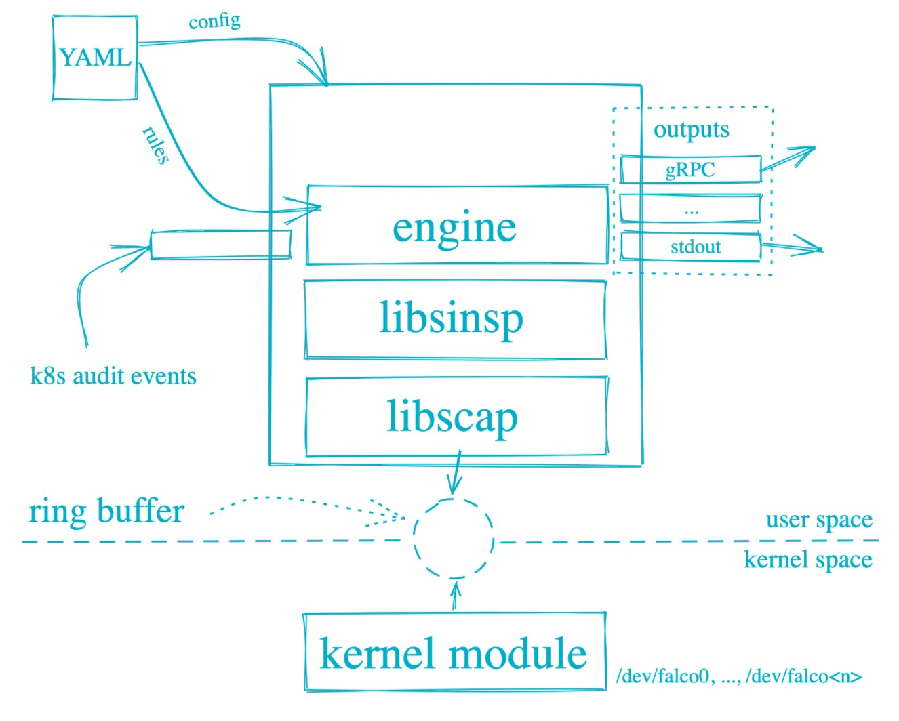
Falco规则文件是包含三种类型元素的YAML文件：
Rules 、Macros、Lists
Rules就是生成告警的条件以及一下描述性输出字符串。Macros 是可以在规则或者其他宏中重复使用的规则条件片段。Lists 类似Python 列表，定义了一个变量集合。
Falco 使用了Sysdig， 在rule的 condition里面,任何 Sysdig 过滤器都可以在 Falco 中使用。
参考如下：
https://github.com/draios/sysdig/wiki/sysdig-user-guide#filtering
这是一个rule的 condition条件示例，在容器内运行 bash shell 时发出警报：
container.id != host and proc.name = bash
第一个子句检查事件是否发生在容器中（Sysdig 事件有一个container字段，该字段等于"host"事件是否发生在host主机上）。第二个子句检查进程名称是否为bash。
举个完整的列子
- list: my_programs
items: [ls, cat, bash]
- macro: access_file
condition: evt.type=open
- rule: program_accesses_file
desc: track whenever a set of programs opens a file
condition: proc.name in (my_programs) and (access_file)
output: a tracked program opened a file (user=%user.name command=%proc.cmdline file=%fd.name)
priority: INFO
下面，我们修改falco 的配置，/etc/falco/falco.yaml
json_output: true
json_include_output_property: true
http_output:
enabled: true
url: "http://localhost:2801"
启动falco
systemctl enable falco && systemctl start falco
https://github.com/falcosecurity/falcosidekick.git
falcosidekick 是一个管道工具，接受 Falco的事件并将它们发送到不同的持久化工具中。我们使用falcosidekick把falco post 过来的数据写入es ，也可以写入kafka。我们也读取kafka里面的东西完成告警， 也可以用 Prometheus 和falco-exporter 完成告警。如下图。
elasticsearch:
hostport: "http://10.10.116.177:9200"
index: "falco"
type: "event"
minimumpriority: ""
suffix: "daily"
mutualtls: false
checkcert: true
username: ""
password: ""
kafka:
hostport: ""
topic: ""
# minimumpriority: "debug"
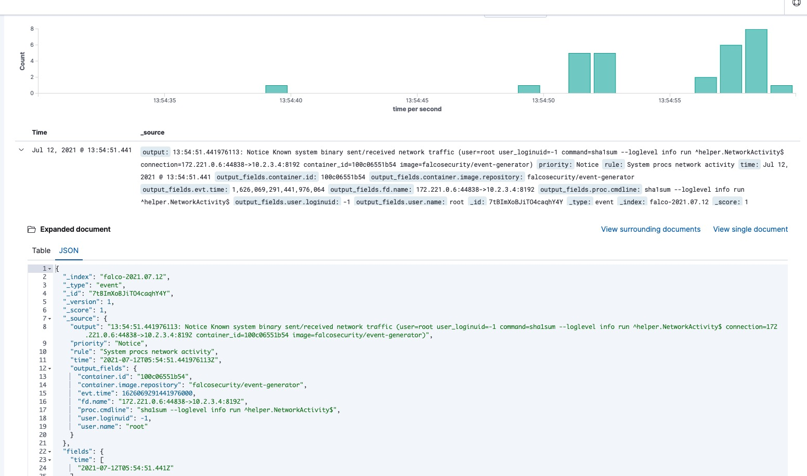